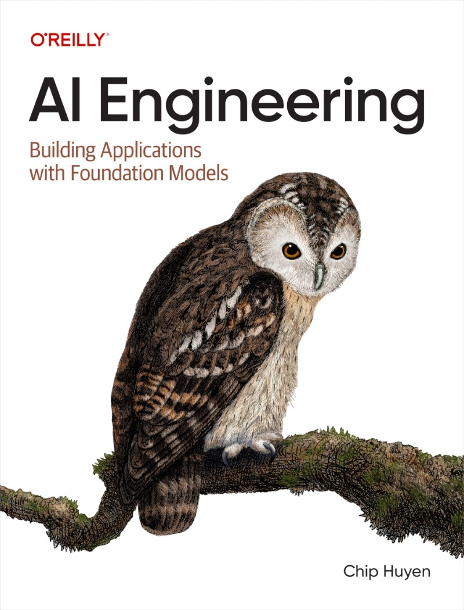
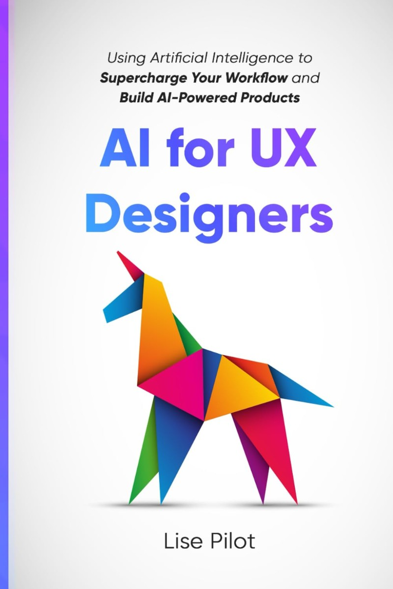
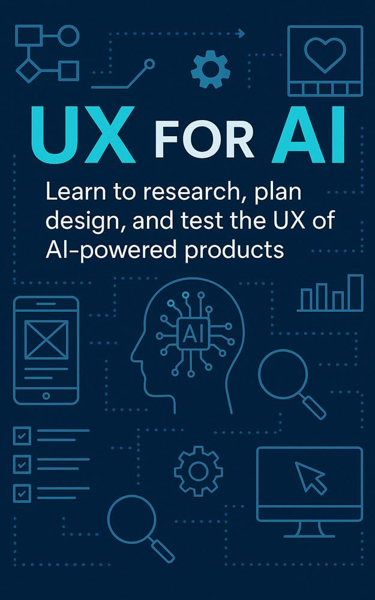
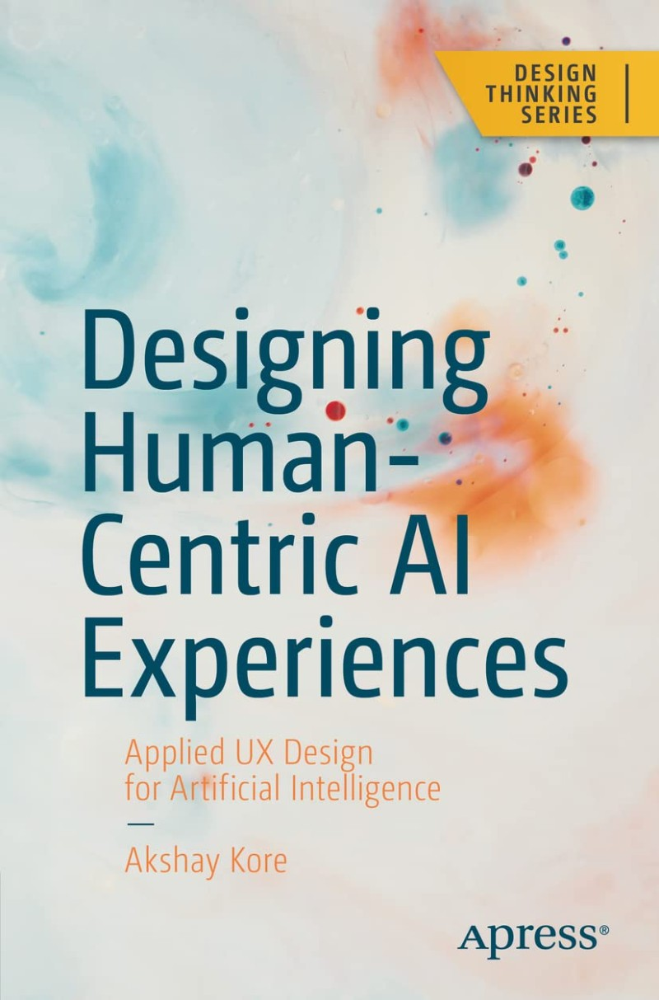
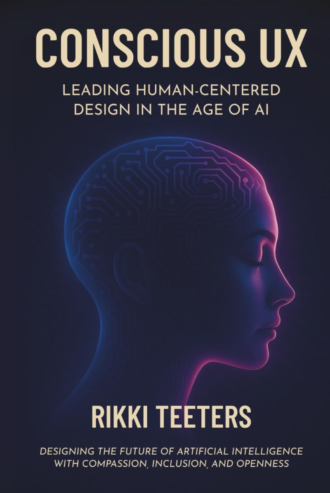
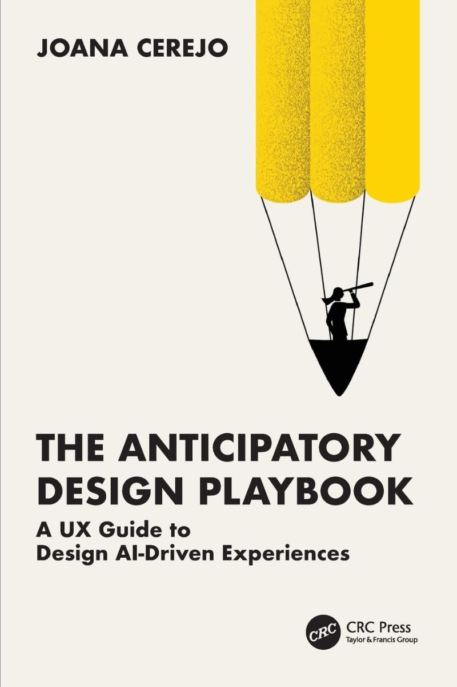

Starting with the one that turns AI projects into products people actually use.
Digital Twin, Value Matrix, storyboarding, hands-on methods drawn from 35 real AI projects.
You don't need to build it. You do need to understand it.

Evaluation, RAG, agents, latency and cost, the constraints behind every AI interface.
A practical guide to using AI across research, ideation and prototyping.

Concrete ways to fold AI tools into each stage of your process, without giving up judgment.
The full UX cycle, rethought for products powered by AI.

Walks the classic UX process end to end and shows where AI changes each step.
Applied UX design for systems that learn, and make mistakes.

Trust, explainability, feedback and failure: how to design for AI that's sometimes wrong.
Why brilliant technology keeps missing the user.
Makes the case, with real examples, that experience decides whether AI succeeds.
Leading human-centered work when AI handles the mechanics.

Built on 130 conversations with designers, on empathy, ethics and what AI can't replace.
A UX guide to AI experiences that anticipate intent and stay transparent.

Patterns, mental models and ethics for systems that act before the user asks.
Save this. Eight books, one path from foundations to foresight.